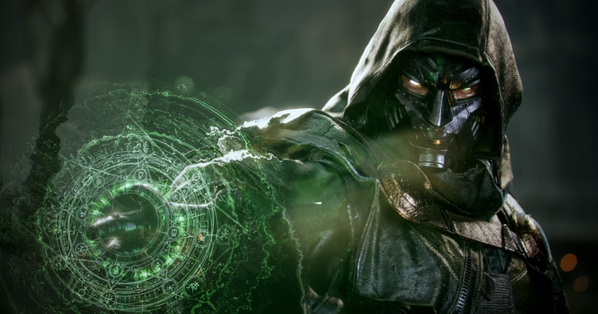

Dr. Doom 角色流程：MetaHuman、ZBrush、Marvelous 與 UE5 即時呈現串成完整角色管線
Rocksteady 角色美術 Patrick van Rooijen 分享 Dr. Doom 製作：MetaHuman 頭部回寫 ZBrush、Marvelous 分層服裝、Maya/TopoGun 重拓樸、Substance 貼圖，最後在 UE5 以 Lumen、markerless mocap 與 Chaos Cloth 完成即時展示。

角色製作 ★★★★★
完整分析
角色製作流程
這篇把角色資產從頭部、服裝到即時展示串成一條可追蹤流程：先把掃描轉成 MetaHuman mesh，再進 ZBrush 做造型與傷疤調整；服裝先在 ZBrush blockout 驗證分層，再用 Marvelous Designer 重建，最後以 Maya／TopoGun 清理拓樸、RizomUV 與 UVPackmaster 整理 UV、Substance Painter 完成材質。
製作價值
值得借鏡的是作者把時間花在會影響最終畫面的地方，例如保留可用的 MetaHuman 眼睛與細毛、在服裝層級用明度分離深度、磨損依實際接觸位置配置。這種資產優先級思維能降低英雄角色在無效細節上的工時，並讓 DCC 與 Unreal 的迭代更集中。
導入測試
可用現有角色做一次 MetaHuman→ZBrush→UE 回寫與 Marvelous 分層服裝測試，記錄頭部形變、UV／材質重用、Chaos Cloth 自穿插與 markerless mocap 抖動的修正成本。作者也提到披風因原始網格而需要提高剛性、mocap 仍有 jitter，因此這套流程成熟但不是零清理。